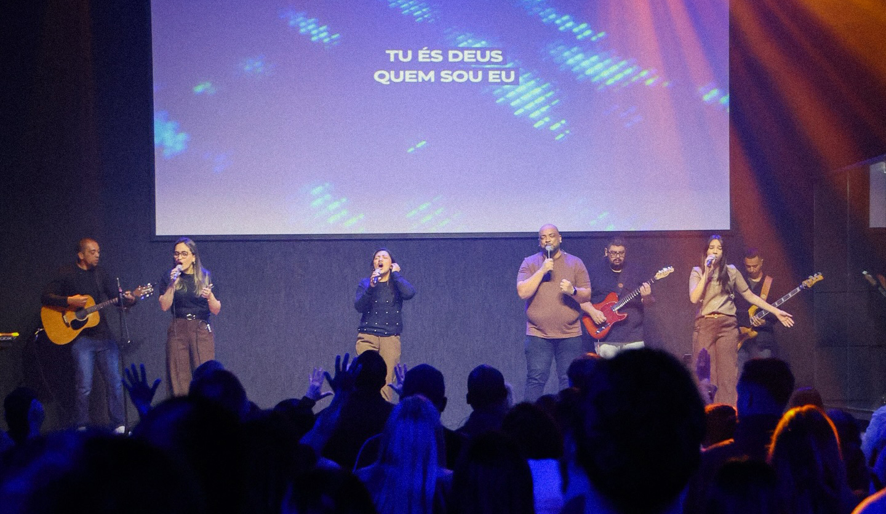
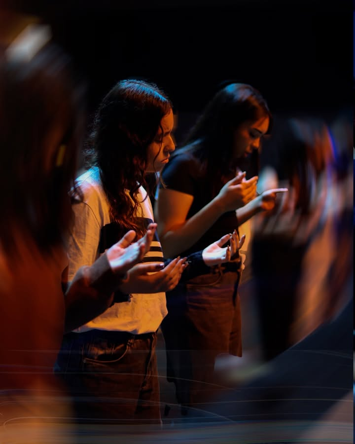
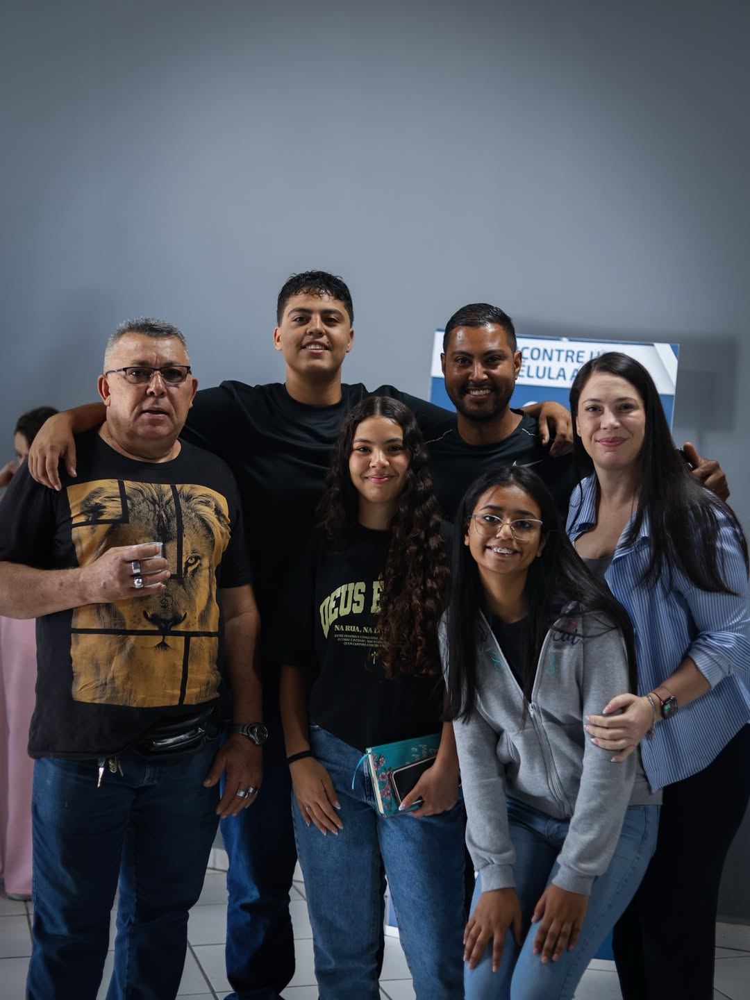
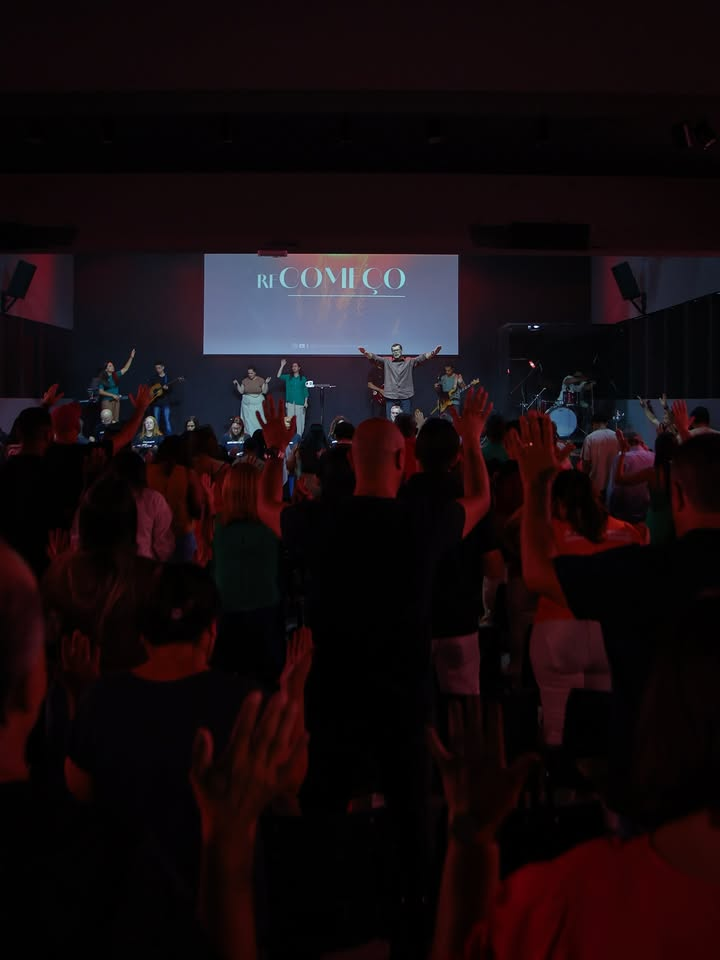
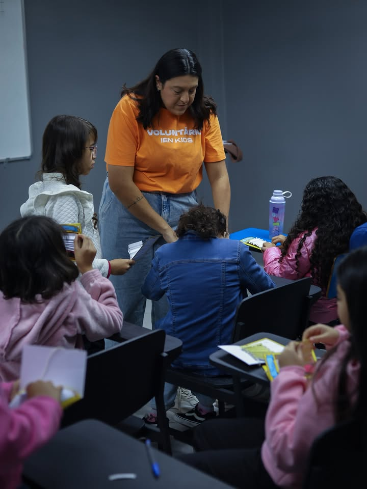

Maravilhas
Em 2026, cremos no agir sobrenatural de Deus restaurando vidas, casas e propósitos.
Igreja Evangélica das Nações • Amamos servir a Deus e as pessoas.

“
Tu és o Deus que operas maravilhas e, entre os povos, tens feito notório o teu poder.
Salmos 77:14
Em 2026, cremos no agir sobrenatural de Deus restaurando vidas, casas e propósitos.
O que Deus fará não ficará oculto: o Seu poder será visto, testemunhado e anunciado entre os povos.
Nossa missão permanece viva: alcançar pessoas, discipular com amor e tocar nações com o Evangelho.
Uma comunidade viva em São Paulo, Vila Jacuí. Você chega e já sabe: esse é o seu lugar.





Venha viver isso com a gente
Próximo passo simples: visite a IEN neste domingo.
Culto de Celebração
Domingo — encontro principal da semana
Estudo da Palavra & Oração
Toda terça-feira — crescimento e intercessão
JUV IEN — Encontro de Jovens
1º e 3º sábado — fé, amizade e propósito
Assista de qualquer lugar
Trajetória
47 anos
Uma história viva de fé, serviço e crescimento contínuo.
Início
1978
Fundada em 21 de abril, de um ponto de pregação para uma igreja que alcança vidas.
Hoje
Células
Discipulado, formação de líderes e dezenas de voluntários servindo com amor.
Pilares de hoje
IEN • Seu Lugar
Homens, mulheres, jovens e crianças crescendo no discipulado.
Ensino e preparo contínuo para testemunhar e ganhar vidas.
Louvor, recepção, diaconia, intercessão e ensino com dedicação.
Um lugar para todos, onde cada pessoa é valiosa no corpo de Cristo.
Sua generosidade fortalece essa missão. Cada oferta e dízimo sustentam discipulado, cuidado de famílias, formação de líderes e ações que continuam alcançando vidas.
Contribuir agoraEscaneie para contribuir via PIX
Primícias
igreja.ev.nacoes@uol.com.br
Dízimos & Ofertas
60.744.596/0001-66
Você não precisa vir pronto. Só precisa vir. Domingo às 10h na IEN.
Seus dados são seguros. Vamos te enviar só o essencial.